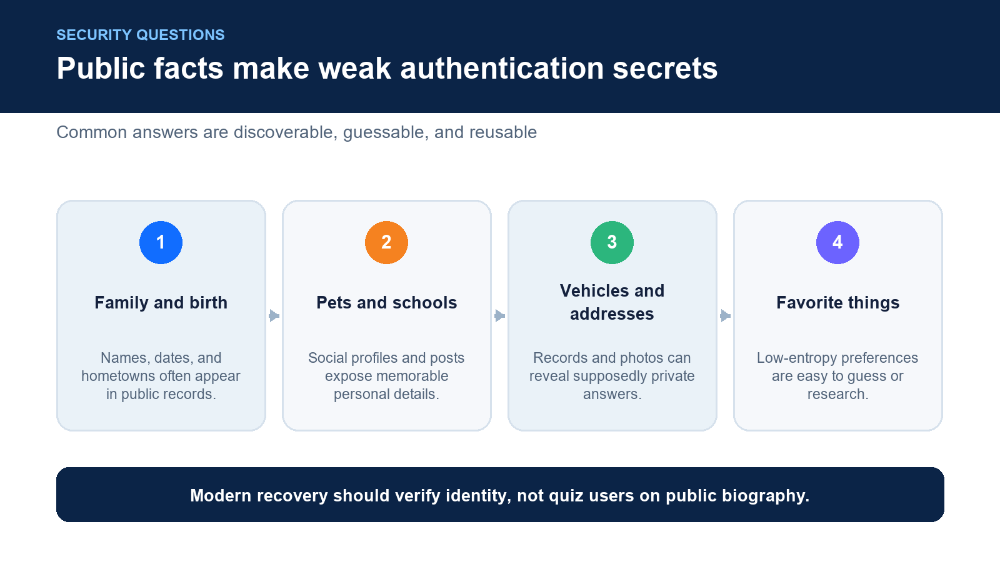
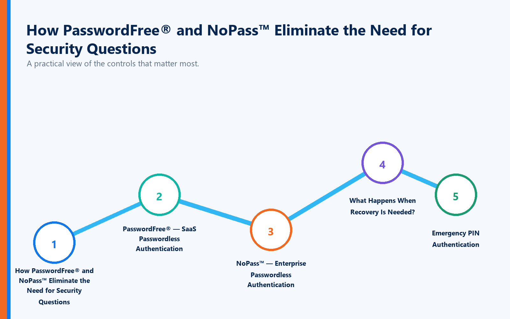

Think back to the last time you reset a password.
There's a good chance you were asked one or more of these questions:
What is your mother's maiden name?
What was the name of your first pet?
What city were you born in?
What was your first car?
What elementary school did you attend?
For years, these "security questions" were considered an effective way to verify identity.
Today, they're increasingly recognized as one of the weakest forms of authentication.
The problem isn't that people forget the answers.
The problem is that everyone else may already know them.
In an age of social media, public records, data breaches, and AI-powered reconnaissance, many traditional authentication questions are surprisingly easy for cybercriminals to answer.
The better question isn't:
"Which security questions should I use?"
It's:
"Why are we still relying on security questions at all?"
What Is Full Duplex Authentication® (FDA)?
Full Duplex Authentication® (FDA) is the patented authentication technology powering PasswordFree®, Identité's Software-as-a-Service (SaaS) authentication platform, and NoPass™, its enterprise Platform-as-a-Service (PaaS) solution. Rather than relying on passwords and knowledge-based questions, FDA securely validates both the user and the trusted device through a unified, passwordless authentication process.
Authentication powered by FDA is designed for both cybersecurity and business continuity. In addition to passwordless authentication, organizations can enable Emergency PIN Authentication and Secure Backup & Restore, allowing users to recover access quickly when devices are lost, replaced, or unavailable—often in less than two minutes.
Why Security Questions Are No Longer Secure
Security questions belong to a category known as Knowledge-Based Authentication (KBA).
The idea is simple:
If only you know the answer, you must be the legitimate user.
Unfortunately, today's attackers often know—or can easily discover—the answers.
Information that once seemed private has become widely available through:
Social media profiles
Public records
Genealogy websites
Data breaches
Online biographies
People-search websites
Social engineering
AI-assisted research
The more connected we become, the easier it is for attackers to build detailed profiles of potential victims.
Information You Should Never Use as a Security Question

If the answer can be researched, guessed, or discovered, it should not be used for authentication.
Avoid questions involving:
Family Information
Never rely on:
Mother's maiden name
Father's name
Children's names
Spouse's name
Siblings' names
Much of this information can be found through social media or public records.
Birth Information
Avoid:
Birth city
Birth hospital
Birthday
Birth year
These details are often publicly available or easily inferred.
Pet Names
One of the most common security questions asks about a first pet.
Unfortunately, many people proudly share pet photos—and names—online.
Schools
Avoid using:
Elementary schools
High schools
Colleges
Universities
These details frequently appear on resumes, LinkedIn profiles, alumni websites, and social media.
Vehicles
Questions such as:
First car
Favorite car
Current vehicle
can often be guessed or discovered through photos and public information.
Addresses
Never rely on:
Childhood street
Current address
Previous address
Addresses frequently appear in public records and commercial databases.
Favorite Things
Questions about:
Favorite color
Favorite movie
Favorite sports team
Favorite vacation
are often easy to guess after reviewing social media activity.
The Biggest Problem: People Tell the Internet Everything
Twenty years ago, answering security questions required personal knowledge.
Today, attackers simply search.
Consider how much information people voluntarily share:
Vacation photos
Wedding announcements
Children's birthdays
Pet pictures
School graduations
Family reunions
Hometown celebrations
Every post creates another clue.
AI tools now allow attackers to correlate information from multiple public sources, making traditional security questions increasingly unreliable.
Even Fake Answers Have Challenges
Some security professionals recommend intentionally providing false answers.
For example:
Question: What is your first pet's name?
Answer: PurpleBananaCoffee1987
While this is more secure than the real answer, it creates another problem.
Now you must remember the fake answer.
Many users forget them.
The result?
Another password reset.
Another help desk call.
Another interruption.
Security Questions Are Becoming Obsolete
Modern authentication is moving away from knowledge-based authentication altogether.
Instead of asking:
"What do you know?"
Modern identity systems increasingly ask:
"Can we securely verify who you are?"
That distinction changes everything.
Passwordless Authentication Eliminates Knowledge-Based Authentication
Rather than relying on:
Passwords
Security questions
SMS codes
Shared secrets
Passwordless authentication verifies identity using trusted authentication mechanisms.
Benefits include:
Stronger phishing resistance
Faster authentication
Reduced help desk costs
Better employee experience
Lower administrative overhead
Most importantly, there are no personal facts for attackers to research.
Built for Security and Business Continuity
Authentication should not depend on information that can be guessed.
Nor should it prevent legitimate users from working when something unexpected happens.
Phones are lost.
Devices are replaced.
Employees travel.
Hardware fails.
Authentication powered by Full Duplex Authentication® is designed with these realities in mind.
How PasswordFree® and NoPass™ Eliminate the Need for Security Questions

PasswordFree® — SaaS Passwordless Authentication
Organizations seeking rapid deployment often choose PasswordFree®, Identité's cloud-delivered authentication platform.
PasswordFree® provides:
Passwordless authentication
Reduced password dependency
No reliance on security questions
Lower help desk costs
Emergency PIN Authentication
Secure Backup & Restore
Simplified identity recovery
Instead of asking users to remember answers to questions they may have created years ago, PasswordFree® focuses on securely validating identity through modern authentication methods.
NoPass™ — Enterprise Passwordless Authentication
Large enterprises frequently require:
Microsoft Active Directory
Microsoft Entra ID
Microsoft 365
Microsoft Azure
On-premises deployment
Customer-controlled cloud environments
These organizations often choose NoPass™, powered by Full Duplex Authentication®.
Many banks, healthcare providers, government agencies, and other regulated organizations prefer NoPass™ because it combines enterprise identity integration with modern passwordless authentication while maintaining complete control over authentication infrastructure.
What Happens When Recovery Is Needed?
Traditional authentication often falls back to security questions.
Modern authentication shouldn't.
Authentication powered by Full Duplex Authentication® provides stronger alternatives.
Emergency PIN Authentication
When organizational policy permits, authorized users can securely authenticate using an Emergency PIN if their primary authentication device is temporarily unavailable.
No guessing childhood memories.
No answering easily researched questions.
Just a secure, policy-controlled recovery mechanism.
Secure Backup & Restore
Organizations can enable Secure Backup & Restore, allowing authentication profiles to be securely backed up to:
Secure cloud storage
Corporate network infrastructure
When a replacement device is available, users simply restore their authentication profile.
In many cases, they're operational again in less than two minutes.
No rebuilding authentication.
No lengthy recovery process.
No reliance on weak knowledge-based authentication.
Best Practices for Modern Authentication
Organizations should:
Eliminate security questions whenever possible.
Replace knowledge-based authentication with passwordless authentication.
Remove dependency on publicly available personal information.
Provide multiple secure recovery methods.
Implement Emergency PIN Authentication.
Enable Secure Backup & Restore.
Educate employees about oversharing personal information online.
Review authentication policies regularly.
Identity verification should rely on trust—not trivia.
The Identité Perspective
The real question isn't:
"Which security questions are safest?"
The better question is:
"Why should authentication depend on information someone else might already know?"
Knowledge-based authentication served an important purpose when digital identities were simpler.
Today's threat landscape is different.
Public information has become easier to collect.
AI makes research faster than ever.
Attackers no longer need to guess—they investigate.
That's why Identité believes modern authentication should move beyond passwords and security questions altogether.
Powered by patented Full Duplex Authentication®, PasswordFree® and NoPass™ eliminate dependence on easily discovered personal information while providing passwordless authentication, Emergency PIN Authentication, and Secure Backup & Restore for resilient identity verification and business continuity.
Because authentication shouldn't depend on how well you remember your past.
It should depend on how securely your identity can be verified today.